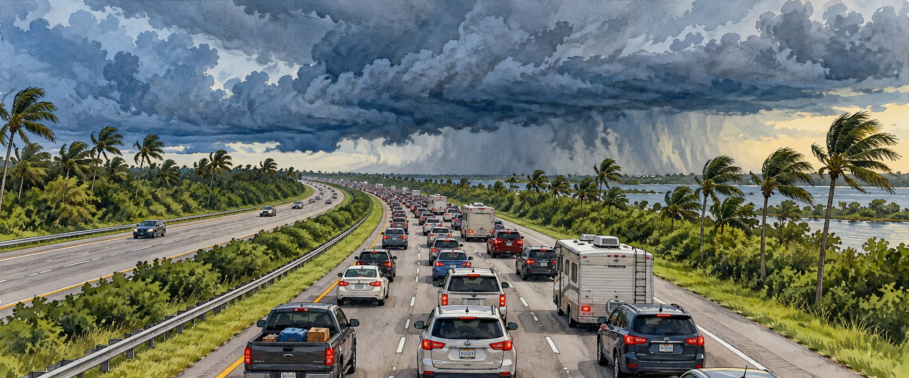

Hurricane Irma (2017)
The Evacuation of a State

The same storm that had threatened to repeat 2004 curved westward at the last moment.
For nearly a week, Florida watched the National Hurricane Center’s forecast cone settle over almost exactly the stretch of coast that Frances and Jeanne had struck thirteen years earlier: the Treasure Coast. Then, in the final days, Irma turned. It struck the Florida Keys and the state’s Gulf coast instead. The Treasure Coast was largely spared; Southwest Florida and the Keys, which had not expected the worst, were not. The last-minute shift, and the largest evacuation in Florida history, are this story.
Sixty Hours at Category 5
Irma formed from a tropical wave off Africa on August 30, 2017. By September 6 it was a Category 5 with 180-mile-per-hour winds and a central pressure of 914 millibars, and it held that intensity for sixty consecutive hours, among the longest such stretches recorded in the Atlantic. Barbuda lost half its housing stock; Saint Martin, the Virgin Islands and Anguilla suffered catastrophic damage. Irma then struck Cuba’s Camagüey Archipelago as a Category 5 before land interaction weakened it to a Category 2.
A Forecast That Pointed at the Treasure Coast
Florida declared a state of emergency on September 4, nearly a week before landfall. But as Irma moved north of Cuba, a subtropical ridge and a low-pressure system over the United States pulled its track steadily westward. Even two days before the Keys landfall, the hurricane center’s report said, “this turn will occur, but the precise moment is still uncertain,” leaving millions unsure until the final hours which coast would take the worst.
Six Million People, One Highway System
More than six million residents were ordered to evacuate, the largest evacuation in Florida history, and millions more left voluntarily. Authorities encouraged evacuation throughout the Keys. Peak outbound traffic from Tampa and Miami reached the Orlando area at nearly the same time, producing gridlock across central Florida. Some drives stretched to twelve hours or more, and gas stations in South Florida ran dry a day or two before landfall.
The Keys, Then Marco Island
Irma made its first Florida landfall at Cudjoe Key at 9:10 a.m. on September 10 as a Category 4 with 130-mile-per-hour winds. Roughly sixty-five percent of Keys homes suffered major damage and about twenty-five percent were destroyed, with surge as high as nine feet. Monroe County’s Emergency Operations Center, relocated to Ocean Reef, worked by flashlight and generator and ultimately searched about fifteen thousand homes over six days.
Irma weakened to a Category 3 and came ashore again at Marco Island at 7:30 that evening with winds of 115 miles per hour. A gust of 142 miles per hour was measured near Naples Airport, the highest on land in South Florida. The storm then crossed the peninsula, passed east of Tampa as a Category 1, and left Florida as a tropical storm on September 11.
The Deaths After the Storm
Irma’s Florida toll, seven direct and seventy-seven indirect deaths by the National Hurricane Center’s count, shows how lethal the aftermath of a modern hurricane can be. Most indirect deaths were heat-related, following prolonged power loss. The starkest case was a Hollywood Hills nursing home where twelve elderly residents died after the facility lost air conditioning and failed to move them to a cooler place in time.
A Smaller Toll Than Feared
Researchers found Floridians evacuated more readily than models based on past storms predicted, crediting sustained government and media messaging, the fresh memory of Hurricane Harvey’s flooding in Texas, and improved hurricane awareness. Power outages reached more than 7.7 million customers, the largest in Florida history at the time, surpassing Wilma. Irma was the first major hurricane to strike Florida since Wilma in 2005.
Quick Facts
| Formed | August 30, 2017, off West Africa |
|---|---|
| Peak | Category 5, 180 mph, 914 millibars |
| First Florida landfall | Cudjoe Key, September 10, 9:10 a.m.; Category 4, 130 mph |
| Second landfall | Marco Island, 7:30 p.m.; Category 3, 115 mph |
| Evacuation order | More than 6 million, the largest in state history |
| Florida deaths | 7 direct, 77 indirect (NHC) |
| Power outages | 7.7 million+ customers |
| Storm size | Tropical-storm-force winds spanning about 650 miles |
Did You Know?
Irma’s outbound traffic from Tampa and Miami hit Orlando at nearly the same time.
Gas stations in South Florida ran dry before the storm arrived.
Irma’s tropical-storm-force winds spanned an area larger than the state of Florida.
Vocabulary
Evacuation compliance: the share of residents who leave when ordered.
Indirect death: a death caused by storm aftermath conditions, such as heat or accidents, rather than wind or water itself.
Subtropical ridge: a belt of high pressure that helps steer hurricanes.
Discussion Questions
1. How did forecast uncertainty change what different regions of Florida expected from Irma?
2. Why do storm deaths continue after the wind stops?
Related Articles
FLH-0009 — Frances and Jeanne (2004)
FLH-0010 — Hurricane Wilma (2005)
FLH-0012 — Hurricane Ian (2022)
Sources
Wikipedia. “Hurricane Irma” and “Effects of Hurricane Irma in Florida.”
National Hurricane Center. “Tropical Cyclone Report: Hurricane Irma (AL112017).” nhc.noaa.gov
National Weather Service, Miami. “Hurricane Irma Local Report/Summary.” weather.gov/mfl
Monroe County, Florida. “Hurricane Irma.” monroecounty-fl.gov
World Vision. “2017 Hurricane Irma: Facts, FAQs, and How to Help.” worldvision.org
Hurricane Science. “2017 — Hurricane Irma.” hurricanescience.org
Wu, H., et al. “Reconstructing and Analyzing the Traffic Flow During Evacuation in Hurricane Irma (2017).” International Journal of Disaster Risk Reduction (2021).
TeamComplete. “Hurricane Irma: The Landfall, the Aftermath, the Recovery.” teamcomplete.com